01 / COMMAND
部隊を動かし、戦線を読む。
作戦マップ上で部隊を選び、進軍先を指定。敵との接触から戦闘シーンへ移行します。敵を殲滅する任務に加え、護衛や設備の防衛など、目的に合わせて部隊を動かします。
iPHONE / TURN-BASED ROBOT SRPG
胴体・腕・脚・背部・武器を組み替え、自分のAW〈Armored Walker〉を編成。
部隊を動かし、敵と接触して戦闘へ。群島の戦いを、一手ずつ切り開く。
v2.2（ビルド28）をiPhoneシミュレータで実際に起動し、連続録画した映像を編集しています。2026年10月18日収録。撮影用の開始位置指定と自動操作を使用し、戦闘速度・演出は通常のまま収録しています。ゲーム内BGMを重ねています。1920 × 1080 px / H.264。
0:00 胴体・脚・武器の換装 0:24 戦闘前の会話 0:39 AWの移動 0:45 敵との交戦 0:58 第3章ボス 1:08 殲滅・防衛
今回のv2.2シミュレータ録画から切り出したゲーム画面です。各画像を開くと原寸で確認・ダウンロードできます。
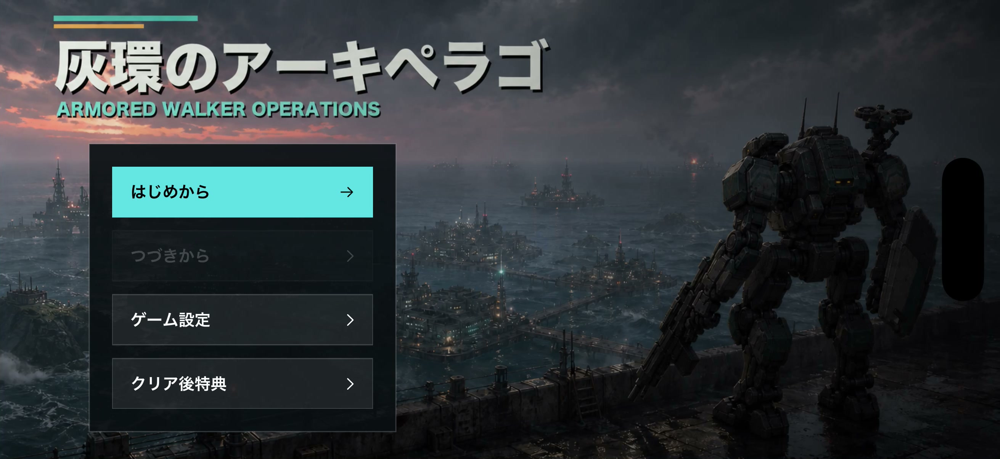
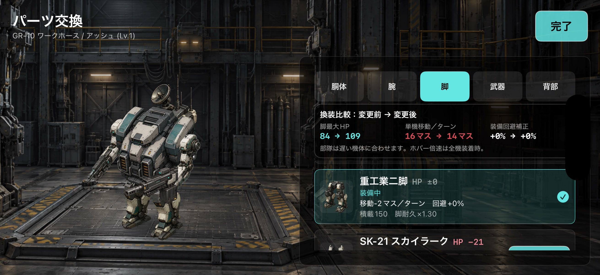
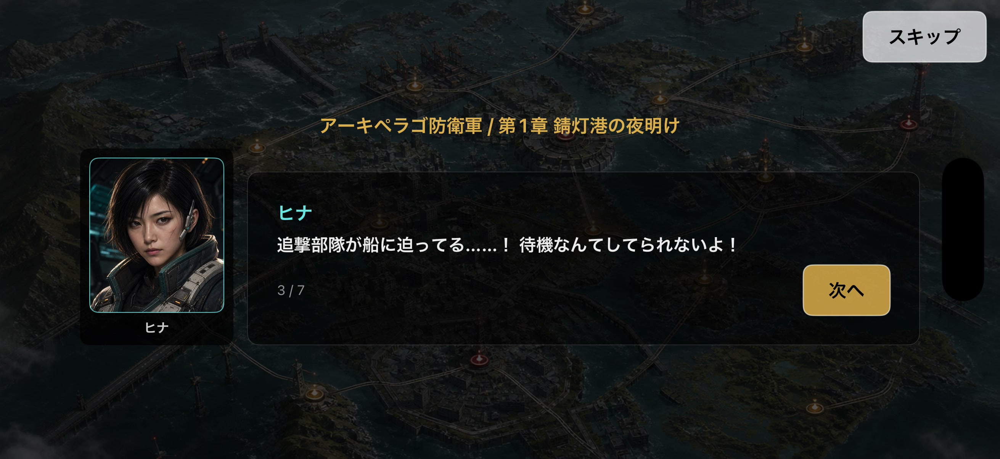
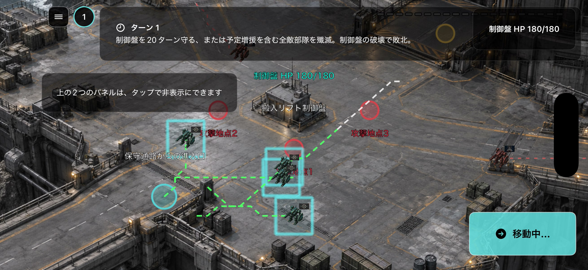
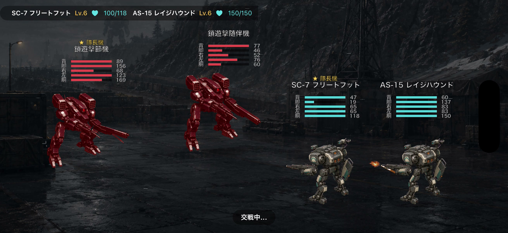
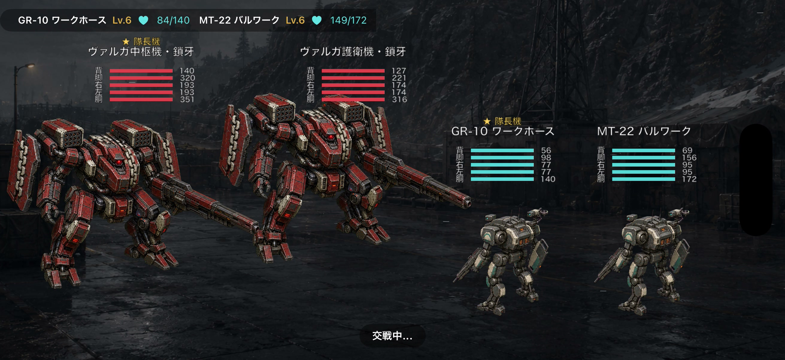
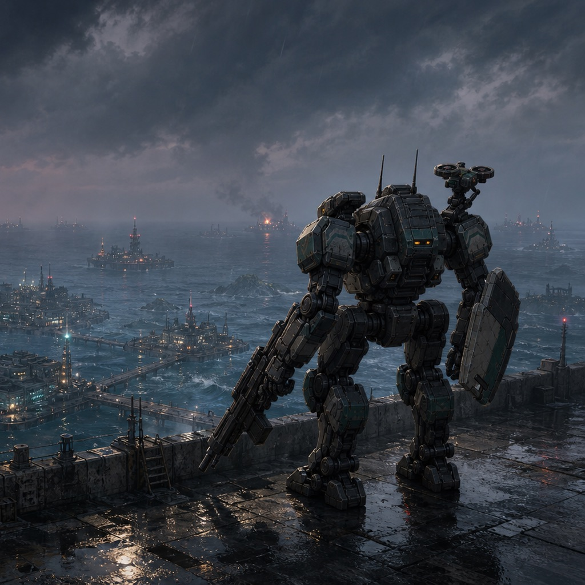
アイコンは1024 × 1024 px。タイトル素材は背景・UIを含むゲーム画面です。本作の紹介・レビュー記事と、その記事の告知にご利用いただけます。掲載に合わせたリサイズ・トリミング可。クレジットを付ける場合は「画像提供：本田」とご記載ください。
2026年10月18日時点で、日本のApp Storeに掲載されているポスター風画像です。ゲーム画面を含む掲載用デザインを、そのままご覧いただけます。
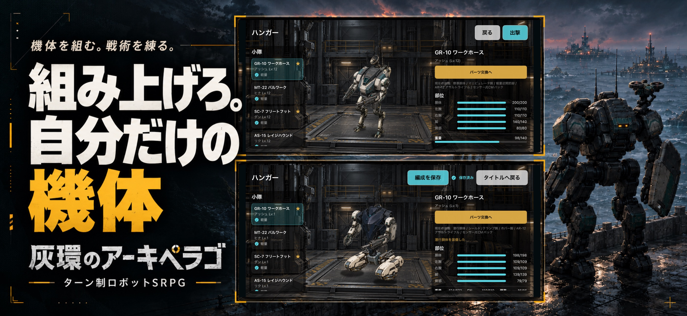
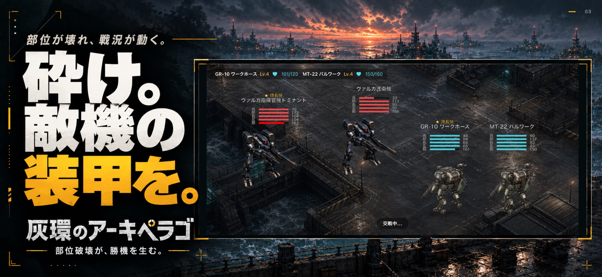
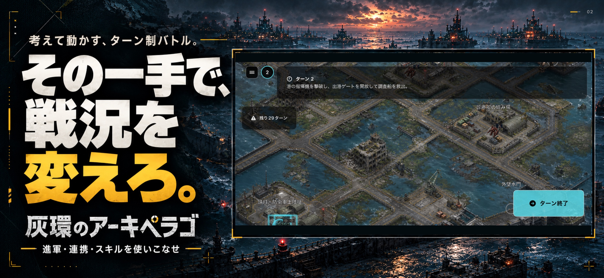
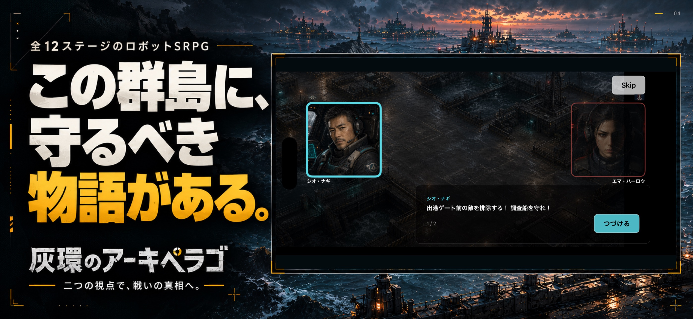
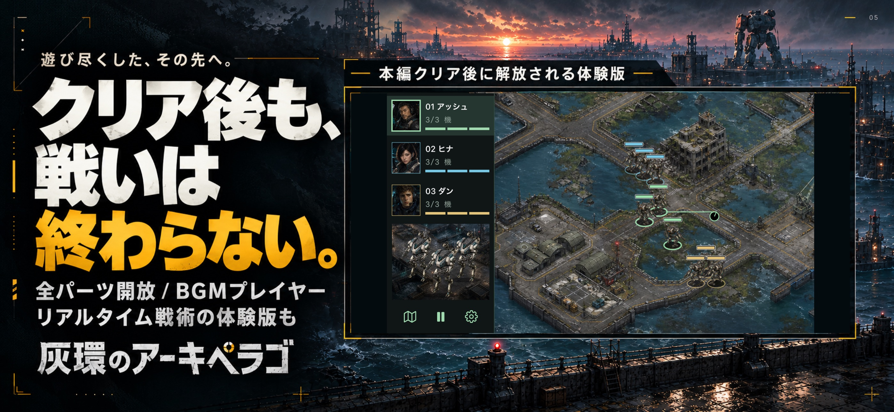
01 / COMMAND
作戦マップ上で部隊を選び、進軍先を指定。敵との接触から戦闘シーンへ移行します。敵を殲滅する任務に加え、護衛や設備の防衛など、目的に合わせて部隊を動かします。
02 / CUSTOMIZE
胴体・腕・脚・背部・武器を換装。HPや移動性能、命中・回避、武器の特性を比較して編成します。胴体と装備武器は戦闘中の外観にも反映されます。
03 / STORY
全12章の戦いを登場人物たちの会話とともに描く、個人制作のロボットSRPG。難易度は3段階。クリア後は面選択や全パーツハンガー、BGMプレイヤーなども楽しめます。
Gray Archipelago is a turn-based robot SRPG for iPhone. Customize your Armored Walkers, direct squads across tactical maps, and enter animated battles when they encounter enemy forces.
The 12-chapter campaign combines elimination, escort, and defense missions with character dialogue. Swap the body, arms, legs, backpack, and weapon to adjust each mech's performance. Body and weapon changes are reflected in battle visuals.
The video and screenshots were captured from version 2.2, build 28, running in the iPhone Simulator on October 18, 2026. The five posters reproduce the images currently listed on the Japanese App Store.